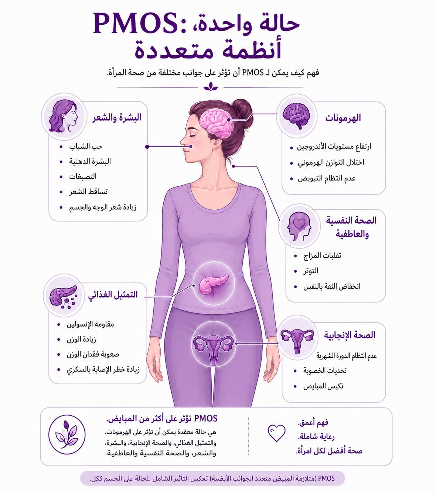
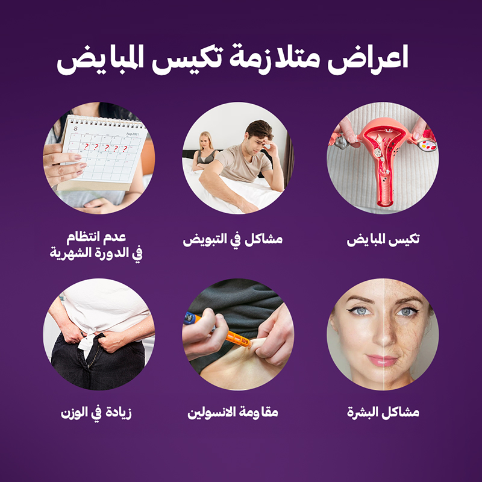
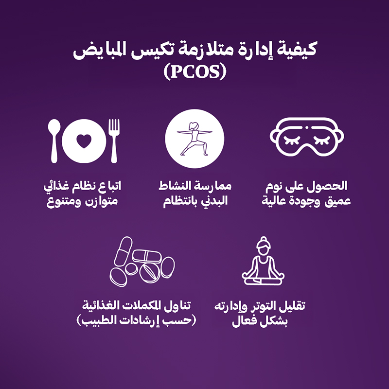
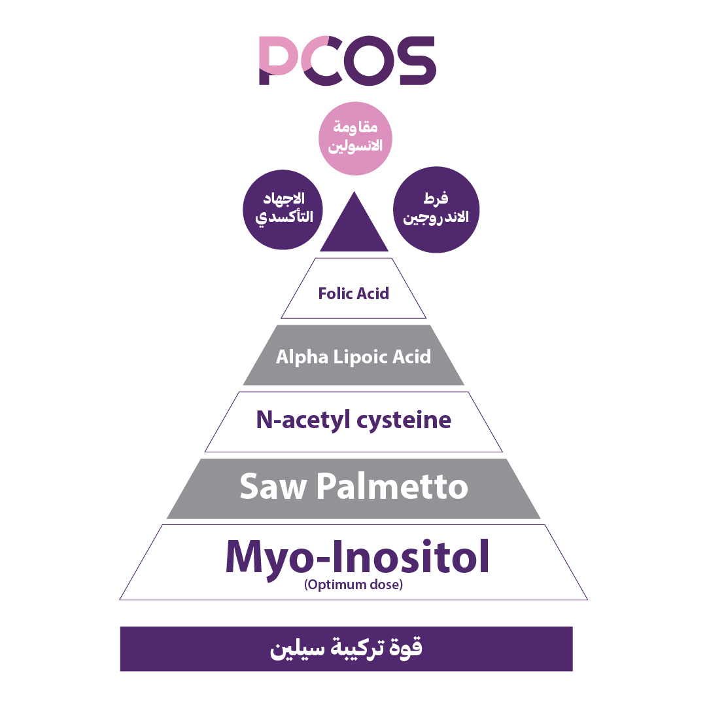

على الرغم من أن السبب الدقيق لمتلازمة تكيس المبايض الأيضية (PCOS/PMOS) غير معروف، إلا أن هناك عدة عوامل يمكن أن تزيد من خطر الإصابة بهذه المتلازمة.
ما كان يُعرف سابقًا باسم متلازمة تكيس المبايض (PCOS) لم يعد يُنظر إليه على أنه اضطراب يقتصر على المبايض، بل أصبح يُفهم اليوم على أنه حالة صحية معقدة تؤثر في جوانب متعددة من صحة المرأة، تشمل الهرمونات، والتمثيل الغذائي، وصحة الجلد والشعر، وإدارة الوزن، والخصوبة، بالإضافة إلى الصحة العامة على المدى الطويل. ويعكس مصطلح متلازمة تكيس المبايض الأيضية (PMOS) هذا الفهم الأكثر شمولًا، حيث يسلط الضوء على الطبيعة الأيضية والهرمونية للحالة، مما يساعد على التشخيص المبكر، وفهم الأعراض بصورة أفضل، ووضع خطة علاجية أكثر تخصيصًا لكل امرأة.
الحالة نفسها لم تتغير... لكن فهمنا لها هو الذي تطور.
ما هي متلازمة تكيس المبايض (PCOS) / متلازمة تكيس المبايض الأيضية (PMOS)؟
متلازمة تكيس المبايض الأيضية (PCOS/PMOS)، والتي يُشار إليها اليوم بشكل متزايد باسم PMOS، هي حالة هرمونية وأيضية شائعة تؤثر على جوانب متعددة من صحة المرأة. قد تؤثر على التوازن الهرموني، والتمثيل الغذائي والتحكم في الوزن، وصحة البشرة والشعر، والصحة الإنجابية والخصوبة، والصحة النفسية والعاطفية. وبينما كان يُنظر إلى الحالة تقليديًا على أنها اضطراب في المبايض، فإننا ندرك الآن أن تأثيراتها تمتد إلى ما هو أبعد من المبايض، ولهذا يتبنى العديد من المتخصصين مصطلح PMOS. اقرئي المزيد عن تغيّر الاسم ←

ماذا يعني ذلك بالنسبة لي؟
ما تغيّر هو فهمنا للحالة. فمصطلح PMOS يسلّط الضوء على التأثيرات الأوسع للحالة ويشجع على اتباع نهج أكثر شمولًا في الرعاية. وإلى جانب الرعاية المناسبة، يمكن أن تساعد تغييرات نمط الحياة الصحية على إدارة PCOS/PMOS بشكل أفضل وتحسين العافية العامة.
اسم جديد... صورة أوضح... ورعاية أفضل للمرأة.
هل أعاني من متلازمة تكيس المبايض الأيضية ؟
على الرغم من أن السبب الدقيق لمتلازمة تكيس المبايض الأيضية غير معروف، إلا أن هذه المتلازمة ترتبط بمجموعة من الأعراض التي قد تؤدي إلى مشكلات صحية ومضاعفات مختلفة
أعراض ومضاعفات متلازمة تكيس المبايض الأيضية
على الرغم من أن السبب الدقيق لمتلازمة تكيس المبايض الأيضية غير معروف، إلا أن هذه المتلازمة ترتبط بمجموعة من الأعراض التي قد تؤدي إلى مشكلات صحية ومضاعفات مختلفة، ومنها:
اقرأ المزيد
تشخيص متلازمة تكيس المبايض الأيضية
ما هي العلامات التي قد تشير إلى إصابتك بمتلازمة تكيس المبايض الأيضية؟
إذا كنتِ تعانين من أي من الأعراض أو المضاعفات المرتبطة بمتلازمة تكيس المبايض الأيضية، فمن المهم أن :
كيفية إدارة PCOS/PMOS؟
غالبًا ما تتطلب إدارة PCOS/PMOS مزيجًا من العادات الصحية، والإرشاد الطبي، والدعم المستمر. وقد يشمل ذلك نظامًا غذائيًا متوازنًا، ونشاطًا بدنيًا منتظمًا، وعلاجات تساعد على تنظيم التوازن الهرموني وصحة الدورة الشهرية ومقاومة الإنسولين وغيرها من الأعراض. ولأن الحالة تؤثر على جوانب متعددة من صحة المرأة، فقد تشمل الرعاية أكثر من تخصص طبي حسب احتياجات كل امرأة
اقرأ المزيد
اختر Celine
بالإضافة إلى ذلك، يُعد المكمل الغذائي Celine® من أحدث الاتجاهات في إدارة أعراض متلازمة تكيس المبايض الأيضية، حيث يوفر مزيجًا متكاملًا 5 في 1 للمساعدة في تصحيح الاختلالات المرتبطة بهذه الحالة
اقرأ المزيد
الأسئلة الشائعة
من الأكثر عرضة للإصابة بمتلازمة تكيس المبايض الأيضية ؟
في أي فئة عمرية تؤثر متلازمة تكيس المبايض الأيضية على النساء؟
تصيب متلازمة تكيس المبايض الأيضية ما بين 4-20% من النساء في سن الإنجاب على مستوى العالم، ومن المحتمل أن تبدأ الحالة أثناء المرحلة الجنينية. تتطور الأعراض مع تقدم النساء في العمر، وعادةً ما تبدأ العلامات الأولى بالظهور في فترة البلوغ.
هل لمتلازمة تكيس المبايض الأيضية مكون وراثي؟
قد يزيد التاريخ العائلي للإصابة بمتلازمة تكيس المبايض الأيضية من احتمالية الإصابة بها. فإذا كانت لديكِ قريبة من الدرجة الأولى (مثل الأم أو الأخت) مصابة بـ PCOS/PMOS، فقد يكون خطر الإصابة أعلى. يشير ذلك إلى احتمال وجود رابط جيني لهذه المتلازمة، على الرغم من أن الجينات المسؤولة لم يتم تحديدها بدقة حتى الآن.
هل للعوامل المرتبطة بنمط الحياة تأثير على الإصابة؟
يمكن أن تسهم العادات الغذائية غير الصحية، وزيادة الوزن أو السمنة، ونمط الحياة الخامل في تفاقم متلازمة تكيس المبايض الأيضية بسبب الاضطرابات الهرمونية المرتبطة بمقاومة الإنسولين.
ما هي الحالات الطبية السابقة التي قد تزيد من احتمالية الإصابة بمتلازمة تكيس المبايض الأيضية؟
الأشخاص الذين يعانون من مقاومة الإنسولين، مثل مرضى مقدمات السكري أو متلازمة التمثيل الغذائي، والنساء المصابات باختلالات هرمونية، خاصة ارتفاع مستويات الأندروجينات (الهرمونات الذكرية)، أكثر عرضة للإصابة بهذه المتلازمة.